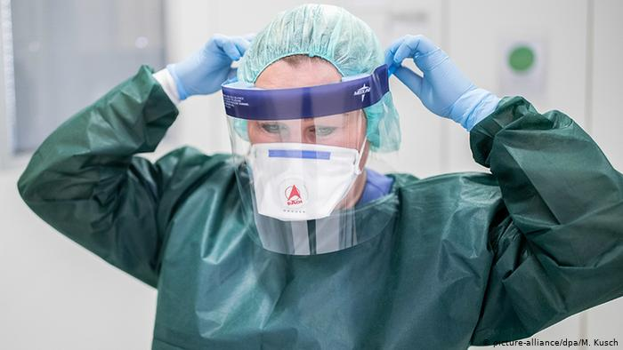
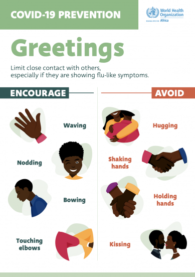

What are coronaviruses? SARS-CoV-2 belongs to a family of single-stranded RNA viruses known as coronaviridae, a common type of virus which affects mammals, birds and reptiles.
In humans, it commonly causes mild infections, similar to the common cold, and accounts for 10–30% of upper respiratory tract infections in adults[4]. More serious infections are rare, although coronaviruses can cause enteric and neurological disease[5]. The incubation period of a coronavirus varies but is generally up to two weeks[6].
Previous coronavirus outbreaks include Middle East respiratory syndrome (MERS), first reported in Saudi Arabia in September 2012, and severe acute respiratory syndrome (SARS), identified in southern China in 2003[7],[8]. MERS infected around 2,500 people and led to more than 850 deaths while SARS infected more than 8,000 people and resulted in nearly 800 deaths[9],[10]. The case fatality rates for these conditions were 35% and 10%, respectively.
SARS-CoV-2 is a new strain of coronavirus that has not been previously identified in humans. Although the incubation period of this strain is currently unknown, the United States Centers for Disease Control and Prevention indicate that symptoms may appear in as few as 2 days or as long as 14 days after exposure[6]. Chinese researchers have indicated that SARS-CoV-2 may be infectious during its incubation period[11

Increasing numbers of confirmed diagnoses, including in healthcare professionals, has indicated that person-to-person spread of SARS-CoV-2 is occurring[15]. The preliminary reproduction number (i.e. the average number of cases a single case generates over the course of its infectious period) is currently estimated to be between 1.4 to 2.5, meaning that each infected individual could infect between 1.4 and 2.5 people[16].
Similarly to other common respiratory tract infections, MERS and SARS are spread by respiratory droplets produced by an infected person when they sneeze or cough[17]. Measures to guard against the infection work under the current assumption that SARS-CoV-2 is spread in the same manner.
How is COVID-19 diagnosed?
As this coronavirus affects the respiratory tract, common presenting symptoms include fever and dry cough, with some patients presenting with respiratory symptoms (e.g. sore throat, nasal congestion, malaise, headache and myalgia) or even struggling for breath.
In severe cases, the coronavirus can cause pneumonia, severe acute respiratory syndrome, kidney failure and death[18].
The case definition for COVID-19 was amended on 13 March 2020 and is now based on symptoms regardless of travel history or contact with confirmed cases. Diagnosis is suspected in patients requiring admission to hospital with signs and symptoms of pneumonia, acute respiratory distress syndrome or influenza, and in those with a new, continuous cough or fever who are well enough to stay in the community (see Box 1). A diagnostic test has been developed, and countries are quarantining suspected cases
